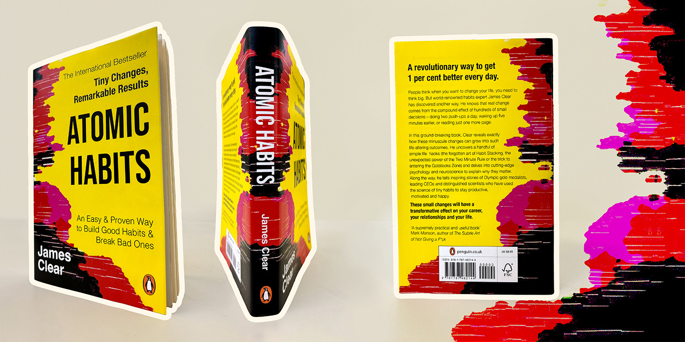
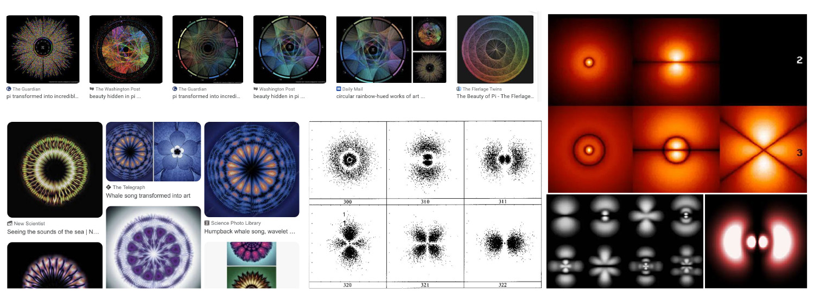
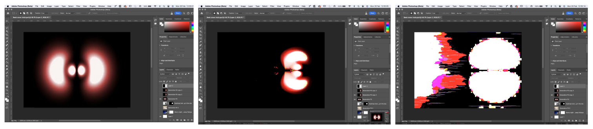
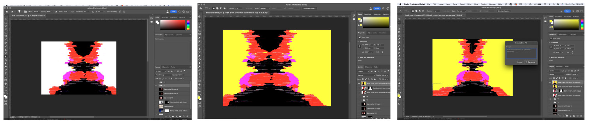
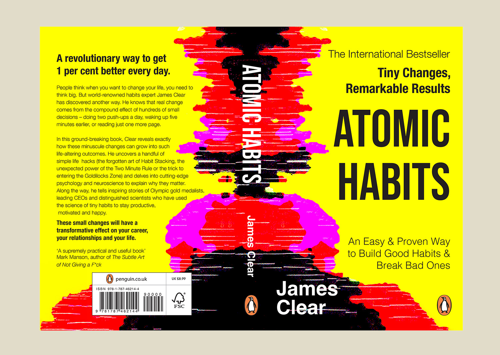
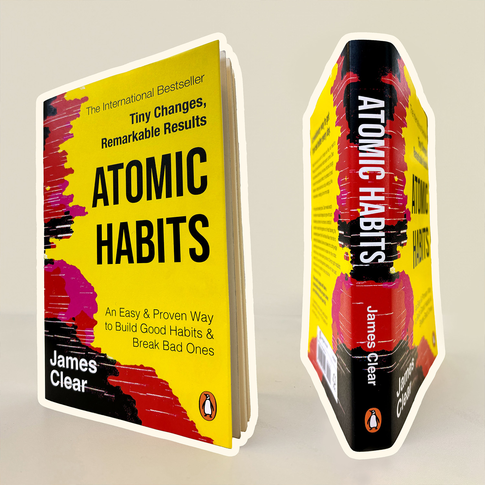
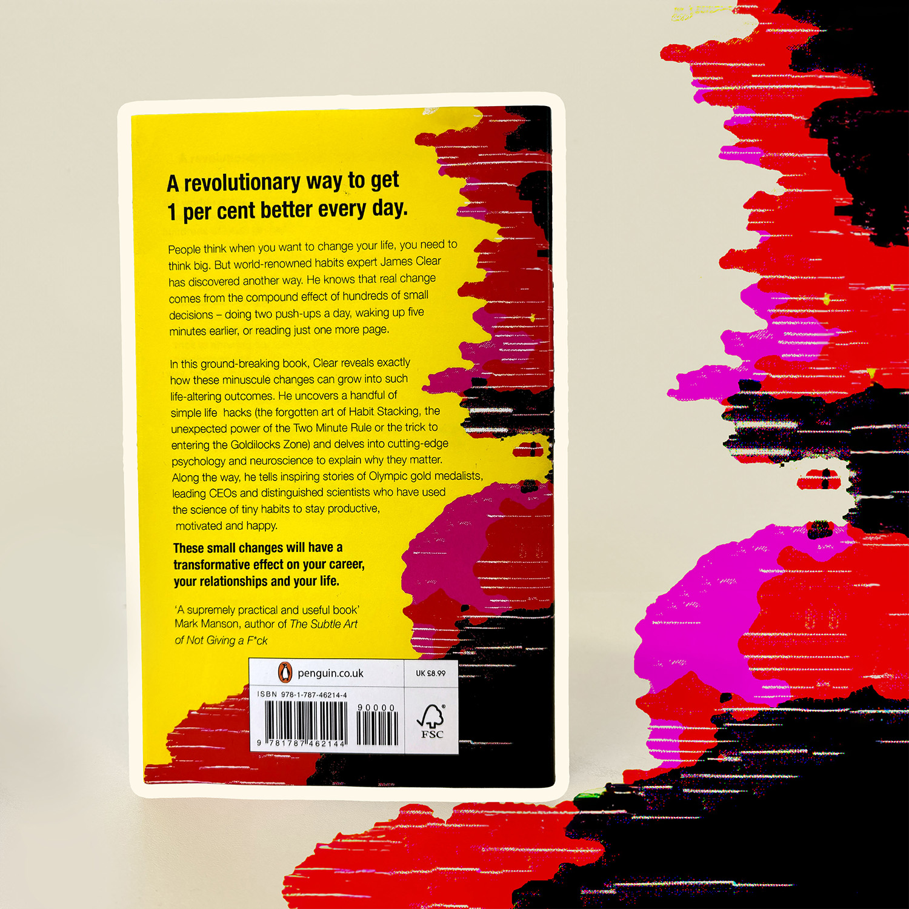

{ inspiration }
Looking into Atoms and other visualisations in the scientific context.

{ finding interesting textures }

I developed my idea using one of the hydrogen visualisations I found on Wikipedia. I then manipulated it by turning, rescaling, use of filters and moving it to the front cover area to leave space for the back. I then used Generative Fill to modify parts of the texture.
This became the base on which I laid out the text, adapting it to the shapes of the cover to create a visually interesting and novel book cover that would stand out on a shelf of other self-help books.

Final Cover



More Projects